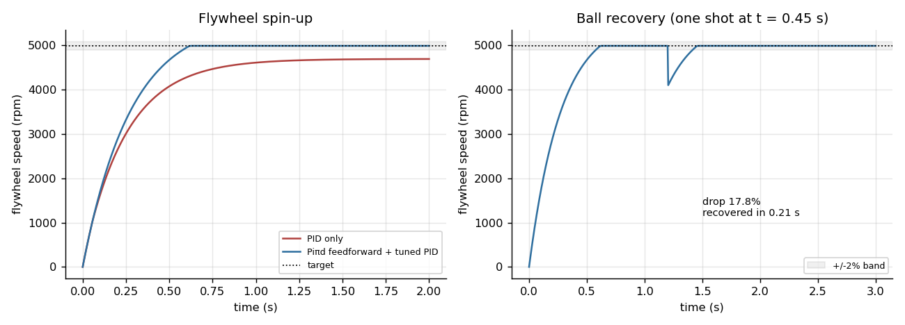
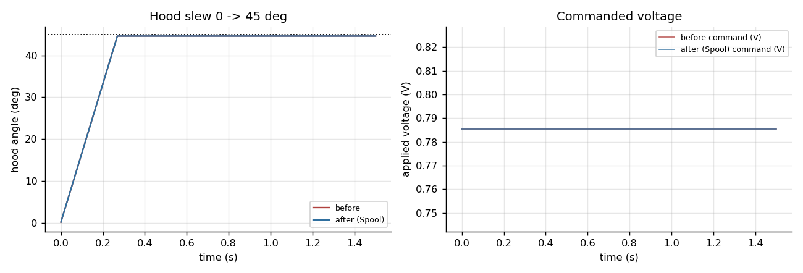
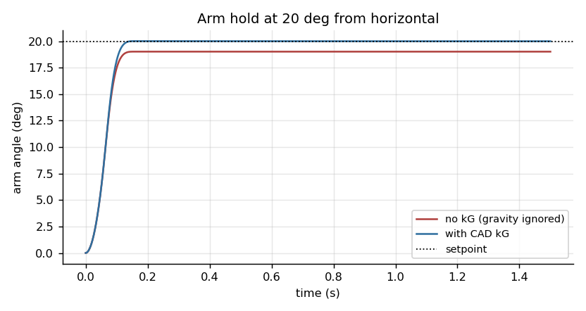
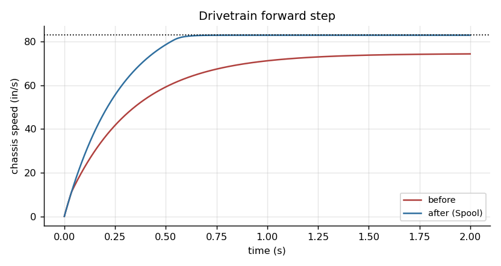
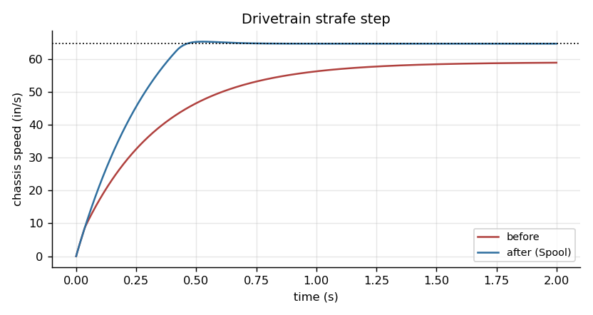

Robot
FAT MAN
mass 12.70 kg
spool 0.1.0
source out/fatman
Turret travel warning. The turret travel in the CAD is ambiguous: the CAD soft stops are 270 deg apart (-135 to 135 deg) and the hard stops are 280 deg apart (-140 to 140 deg); the servo gearing can only reach 133.3 deg at the axis (320 deg usable / 2.40:1). Those numbers cannot all be right, and Spool is not guessing which one to keep. Measure the real travel between the hard stops on the robot and re-run `spool fatman --turret-travel-deg <total deg>`. Until then the CAD stops are kept exactly as encoded and the 0 to 90 deg slew test may run past the physical stop.
Gains
| Mechanism | kS (V) | kV | kA | kG (V) | Units | Source |
|---|---|---|---|---|---|---|
| drivetrain forward | 0.4873 | 4.42880 | 1.25959 | - | V, V/(m/s), V/(m/s^2) | estimated datasheet estimated |
| drivetrain strafe | 0.4873 | 5.67795 | 1.61485 | - | V, V/(m/s), V/(m/s^2) | estimated datasheet estimated |
| flywheel | 1.1167 | 0.01858 | 0.00517 | - | V, V/(rad/s), V/(rad/s^2) | estimated datasheet estimated |
| FRC arm (equivalent) | 0.1563 | 0.48588 | 0.03447 | 1.4537 | V, V/(rad/s), V/(rad/s^2) | estimated datasheet estimated estimated |
kS is always estimated: friction cannot come from CAD, so
spool calibrate measures it. Every other source tag is in
robot.json and gains.json.
Before / after
| Scenario | Rise before | Rise after | Overshoot before % | Overshoot after % | Settle before | Settle after |
|---|---|---|---|---|---|---|
| flywheel spin-up | 0.544 | 0.425 | -6.0 | 0.0 | 2.000 | 0.575 |
| turret slew | 0.264 | 0.264 | -0.4 | -0.4 | 0.327 | 0.327 |
| hood slew | 0.216 | 0.216 | -0.9 | -0.9 | 0.266 | 0.266 |
| arm hold | 0.069 | 0.070 | -4.9 | 0.1 | 0.141 | 0.109 |
| drive forward | 0.706 | 0.413 | -10.3 | -0.0 | 2.000 | 0.545 |
| drive strafe | 0.718 | 0.341 | -8.9 | 1.0 | 2.000 | 0.420 |
Times in seconds. Negative overshoot means the axis came to rest below the target: a steady-state error, not a dip. "before" is a PID with no feedforward, "after" is Spool's feedforward plus a tuned PID.
A shot takes 5.30 J and drops the wheel 17.8 percent, back inside 2 percent in 0.214 s (PASS at 2 percent in 0.5 s).
Servo axes (no PIDF)
| Axis | Servo | Ratio | Speed (deg/s) | Torque out (N m) | Required (N m) | Margin |
|---|---|---|---|---|---|---|
| turret | SR-Servo-02 | 2.40 | 272 | 11.57 | 0.901 | 12.8x |
| hood | SR-Servo-02 | 3.95 | 165 | 9.51 | 0.020 | 475.6x |
| flower_arm | SR-Servo-02 | 1.00 | 652 | 5.09 | 0.851 | 6.0x |
A position servo closes its own loop, so there is no PIDF to tune. Spool exports ratio, speed, torque and limits instead.
Plots




